- 00 导读 如何打造高质量的应用？.md
- 00 开篇词 焦虑的移动开发者该如何破局？.md
- 01 崩溃优化（上）：关于“崩溃”那些事儿.md
- 02 崩溃优化（下）：应用崩溃了，你应该如何去分析？.md
- 03 内存优化（上）：4GB内存时代，再谈内存优化.md
- 04 内存优化（下）：内存优化这件事，应该从哪里着手？.md
- 05 卡顿优化（上）：你要掌握的卡顿分析方法.md
- 06 卡顿优化（下）：如何监控应用卡顿？.md
- 06补充篇 卡顿优化：卡顿现场与卡顿分析.md
- 07 启动优化（上）：从启动过程看启动速度优化.md
- 08 启动优化（下）：优化启动速度的进阶方法.md
- 09 I_O优化（上）：开发工程师必备的I_O优化知识.md
- 10 I_O优化（中）：不同I_O方式的使用场景是什么？.md
- 11 I_O优化（下）：如何监控线上I_O操作？.md
- 12 存储优化（上）：常见的数据存储方法有哪些？.md
- 13 存储优化（中）：如何优化数据存储？.md
- 14 存储优化（下）：数据库SQLite的使用和优化.md
- 15 网络优化（上）：移动开发工程师必备的网络优化知识.md
- 16 网络优化（中）：复杂多变的移动网络该如何优化？.md
- 17 网络优化（下）：大数据下网络该如何监控？.md
- 18 耗电优化（上）：从电量优化的演进看耗电分析.md
- 19 耗电优化（下）：耗电的优化方法与线上监控.md
- 20 UI 优化（上）：UI 渲染的几个关键概念.md
- 21 UI 优化（下）：如何优化 UI 渲染？.md
- 22 包体积优化（上）：如何减少安装包大小？.md
- 23 包体积优化（下）：资源优化的进阶实践.md
- 24 想成为Android高手，你需要先搞定这三个问题.md
- 25 如何提升组织与个人的研发效能？.md
- 26 关于编译，你需要了解什么？.md
- 27 编译插桩的三种方法：AspectJ、ASM、ReDex.md
- 28 大数据与AI，如何高效地测试？.md
- 29 从每月到每天，如何给版本发布提速？.md
- 30 数据评估（上）：如何实现高可用的上报组件？.md
- 31 数据评估（下）：什么是大数据平台？.md
- 32 线上疑难问题该如何排查和跟踪？.md
- 33 做一名有高度的移动开发工程师.md
- 34 聊聊重构：优秀的架构都是演进而来的.md
- 35 Native Hook 技术，天使还是魔鬼？.md
- 36 跨平台开发的现状与应用.md
- 37 移动开发新大陆：工作三年半，移动开发转型手游开发.md
- 38 移动开发新大陆：Android音视频开发.md
- 39 移动开发新大陆： 边缘智能计算的趋势.md
- 40 动态化实践，如何选择适合自己的方案？.md
- 41 聊聊Flutter，面对层出不穷的新技术该如何跟进？.md
- 42 Android开发高手课学习心得.md
- Android JVM TI机制详解（内含福利彩蛋）.md
- Android工程师的“面试指南”.md
- Native下如何获取调用栈？.md
- 专栏学得苦？可能你还需要一份配套学习书单.md
- 专栏学得苦？可能是方法没找对.md
- 程序员修炼之路 设计能力的提升途径.md
- 练习Sample跑起来 ASM插桩强化练习.md
- 练习Sample跑起来 唯鹿同学的练习手记 第1辑.md
- 练习Sample跑起来 唯鹿同学的练习手记 第2辑.md
- 练习Sample跑起来 唯鹿同学的练习手记 第3辑.md
- 练习Sample跑起来 热点问题答疑第1期.md
- 练习Sample跑起来 热点问题答疑第2期.md
- 练习Sample跑起来 热点问题答疑第3期.md
- 练习Sample跑起来 热点问题答疑第4期.md
- 结束语 移动开发的今天和明天.md
- 聊聊Framework的学习方法.md
练习Sample跑起来 唯鹿同学的练习手记 第3辑
没想到之前的写的练习心得得到了老师的认可，看来我要更加认真努力练习了。今天来练习第22、27、ASM这三课的Sample。
尝试使用Facebook ReDex库来优化我们的安装包。
准备工作
首先是下载ReDex：
git clone https://github.com/facebook/redex.git
cd redex
接着是安装：
autoreconf -ivf && ./configure && make -j4
sudo make install
在安装时执行到这里，报出下图错误：
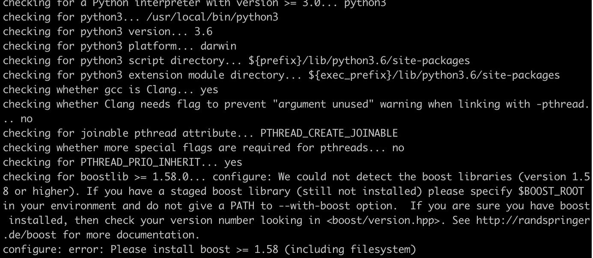
其实就是没有安装Boost，所以执行下面的命令安装它。
brew install boost jsoncpp
安装Boost完成后，再等待十几分钟时间安装ReDex。
下来就是编译我们的Sample，得到的安装包信息如下。
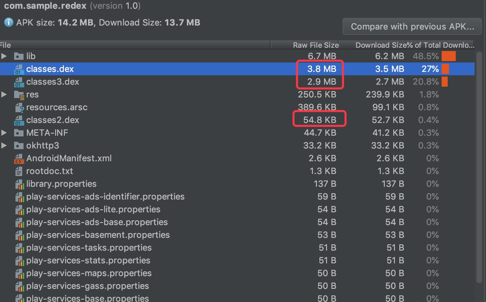
可以看到有三个Dex文件，APK大小为13.7MB。
通过ReDex命令优化
为了让我们可以更加清楚流程，你可以输出ReDex的日志。
export TRACE=2
去除Debuginfo的方法，需要在项目根目录执行：
redex --sign -s ReDexSample/keystore/debug.keystore -a androiddebugkey -p android -c redex-test/stripdebuginfo.config -P ReDexSample/proguard-rules.pro -o redex-test/strip_output.apk ReDexSample/build/outputs/apk/debug/ReDexSample-debug.apk
上面这段很长的命令，其实可以拆解为几部分：
--sign签名信息-s（keystore）签名文件路径-a（keyalias）签名的别名-p（keypass）签名的密码-c指定ReDex的配置文件路径-PProGuard规则文件路径-o输出的文件路径最后是要处理APK文件的路径
但在使用时，我遇到了下图的问题：
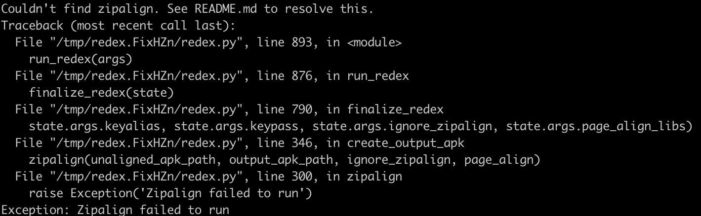
这里是找不到Zipalign，所以需要我们配置Android SDK的根目录路径，添加在原命令前面：
ANDROID_SDK=/path/to/android/sdk redex [... arguments ...]
结果如下：
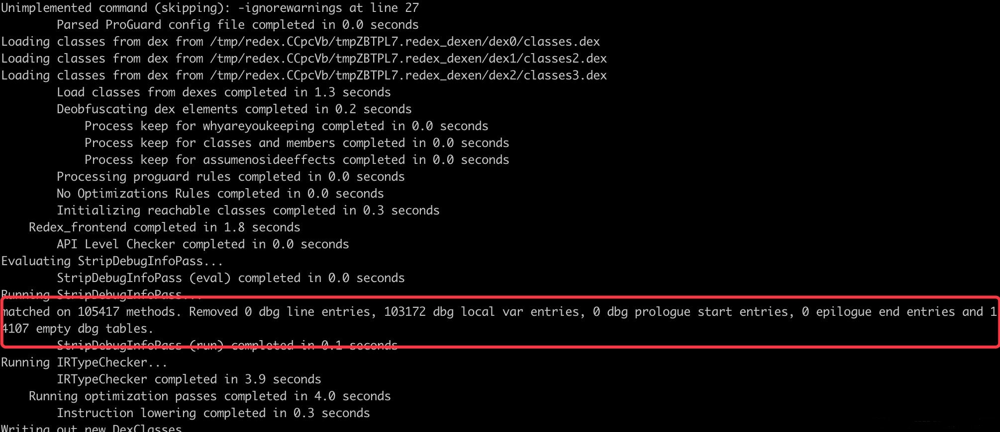
实际的优化效果是，原Debug包为14.21MB，去除Debuginfo的方法后为12.91MB，效果还是不错的。去除的内容就是一些调试信息及堆栈行号。
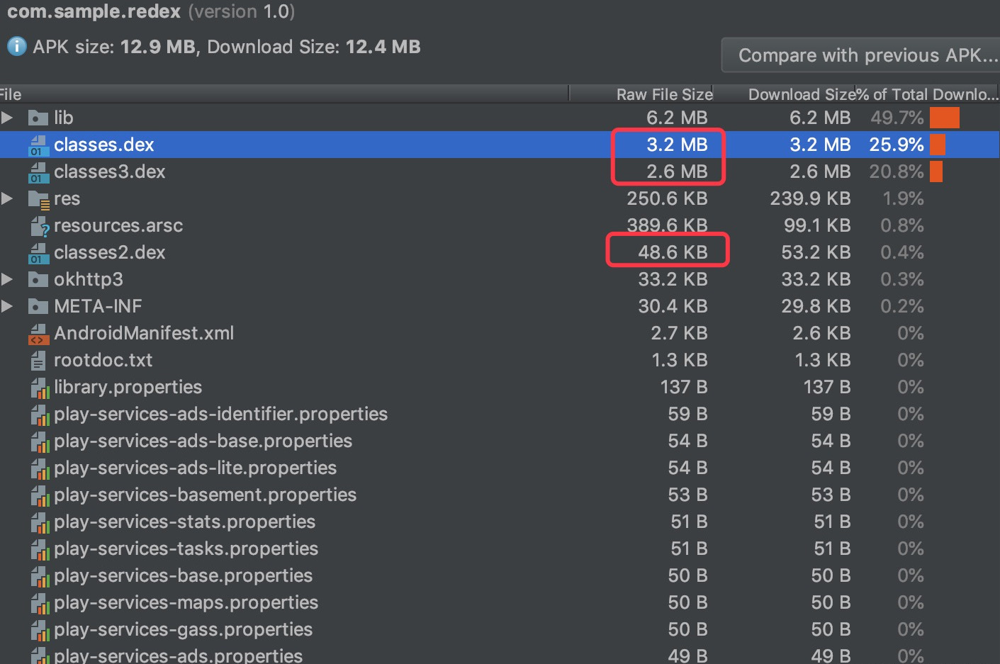
不过老师在Sample的proguard-rules.pro中添加了-keepattributes SourceFile,LineNumberTable保留了行号信息。
所以处理后的包安装后进入首页，还是可以看到堆栈信息的行号。
Dex重分包的方法
redex --sign -s ReDexSample/keystore/debug.keystore -a androiddebugkey -p android -c redex-test/interdex.config -P ReDexSample/proguard-rules.pro -o redex-test/interdex_output.apk ReDexSample/build/outputs/apk/debug/ReDexSample-debug.apk
和之前的命令一样，只是-c使用的配置文件为interdex.config。
输出信息：
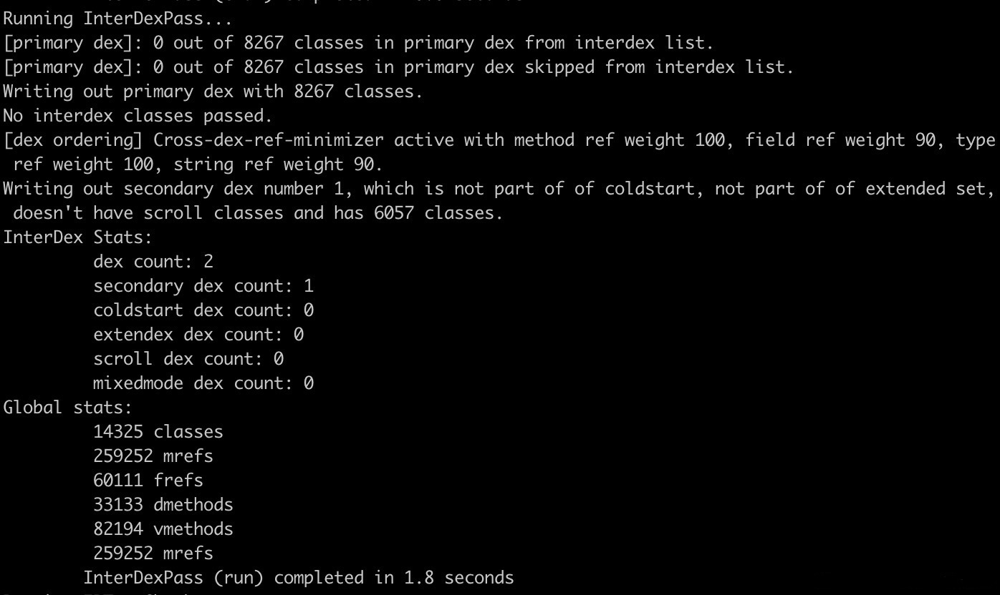
优化效果为，原Debug包为14.21MB、3个Dex，优化后为13.34MB、2个Dex。
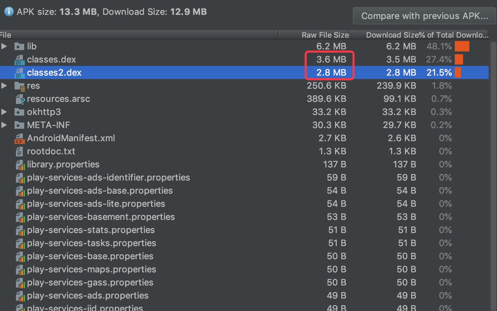
根据老师的介绍，如果你的应用有4个以上的Dex，这个体积优化至少有10%。 看来效果还是很棒棒的。至于其他问题，比如在Windows环境使用ReDex，可以参看ReDex的使用文档。
利用AspectJ实现插桩的例子。
效果和Chapter07是一样的，只是Chapter07使用的是ASM方式实现的，这次是AspectJ实现。ASM与AspectJ都是Java字节码处理框架，相比较来说AspectJ使用更加简单，同样的功能实现只需下面这点代码，但是ASM比AspectJ更加高效和灵活。
AspectJ实现代码：
@Aspect
public class TraceTagAspectj {
@TargetApi(Build.VERSION_CODES.JELLY_BEAN_MR2)
@Before("execution(* **(..))")
public void before(JoinPoint joinPoint) {
Trace.beginSection(joinPoint.getSignature().toString());
}
/**
* hook method when it's called out.
*/
@TargetApi(Build.VERSION_CODES.JELLY_BEAN_MR2)
@After("execution(* **(..))")
public void after() {
Trace.endSection();
}
简单介绍下上面代码的意思：
@Aspect：在编译时AspectJ会查找被@Aspect注解的类，然后执行我们的AOP实现。@Before：可以简单理解为方法执行前。@After：可以简单理解为方法执行后。execution：方法执行。* **(..)：第一个星号代表任意返回类型，第二个星号代表任意类，第三个代表任意方法，括号内为方法参数无限制。星号和括号内都是可以替换为具体值，比如String TestClass.test(String)。
知道了相关注解的含义，那么实现的代码含义就是，所有方法在执行前后插入相应指定操作。
效果对比如下：
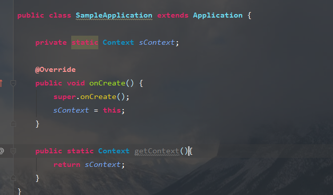
-
下来实现给MainActivity的onResume方法增加try catch。
@Aspect
public class TryCatchAspect {
@Pointcut("execution(* com.sample.systrace.MainActivity.onResume())") // <- 指定类与方法
public void methodTryCatch() {
}
@Around("methodTryCatch()")
public void aroundTryJoinPoint(ProceedingJoinPoint joinPoint) throws Throwable {
// try catch
try {
joinPoint.proceed(); // <- 调用原方法
} catch (Exception e) {
e.printStackTrace();
}
}
}
上面用到了两个新注解：
@Around：用于替换以前的代码，使用joinPoint.proceed()可以调用原方法。@Pointcut：指定一个切入点。
实现就是指定一个切入点，利用替换原方法的思路包裹一层try catch。
效果对比如下：
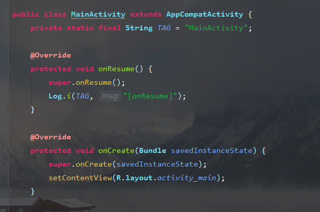
-
当然AspectJ还有很多用法，Sample中包含有《AspectJ程序设计指南》，便于我们具体了解和学习AspectJ。
Sample利用ASM实现了统计方法耗时和替换项目中所有的new Thread。
运行项目首先要注掉ASMSample build.gradle的
apply plugin: 'com.geektime.asm-plugin'和根目录build.gradle的classpath ("com.geektime.asm:asm-gradle-plugin:1.0") { changing = true }。运行
gradle task ":asm-gradle-plugin:buildAndPublishToLocalMaven"编译plugin插件，编译的插件在本地.m2\repository目录下打开第一步注掉的内容就可以运行了。
实现的大致过程是，先利用Transform遍历所有文件，再通过ASM的visitMethod遍历所有方法，最后通过AdviceAdapter实现最终的修改字节码。具体实现可以看代码和《练习Sample跑起来 | ASM插桩强化练习》。
效果对比：
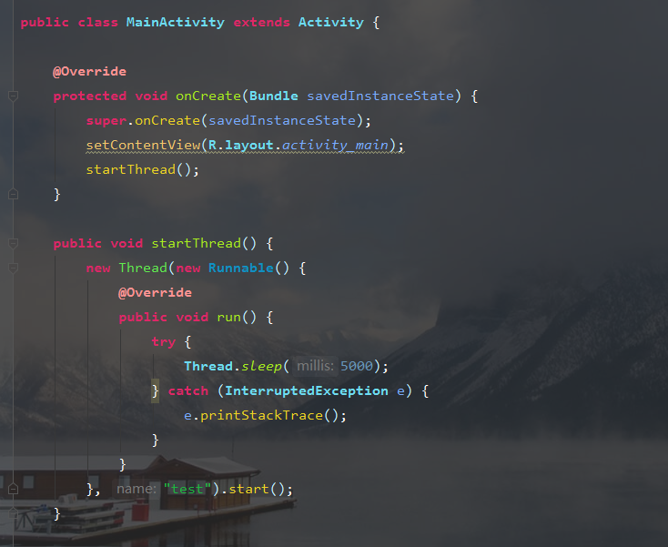
-
下面是两个练习：
1.给某个方法增加try catch
这里我就给MainActivity的mm方法进行try catch。实现很简单，直接修改ASMCode的TraceMethodAdapter。
public static class TraceMethodAdapter extends AdviceAdapter {
private final String methodName;
private final String className;
private final Label tryStart = new Label();
private final Label tryEnd = new Label();
private final Label catchStart = new Label();
private final Label catchEnd = new Label();
protected TraceMethodAdapter(int api, MethodVisitor mv, int access, String name, String desc, String className) {
super(api, mv, access, name, desc);
this.className = className;
this.methodName = name;
}
@Override
protected void onMethodEnter() {
if (className.equals("com/sample/asm/MainActivity") && methodName.equals("mm")) {
mv.visitTryCatchBlock(tryStart, tryEnd, catchStart, "java/lang/Exception");
mv.visitLabel(tryStart);
}
}
@Override
protected void onMethodExit(int opcode) {
if (className.equals("com/sample/asm/MainActivity") && methodName.equals("mm")) {
mv.visitLabel(tryEnd);
mv.visitJumpInsn(GOTO, catchEnd);
mv.visitLabel(catchStart);
mv.visitMethodInsn(Opcodes.INVOKEVIRTUAL, "java/lang/RuntimeException", "printStackTrace", "()V", false);
mv.visitInsn(Opcodes.RETURN);
mv.visitLabel(catchEnd);
}
}
visitTryCatchBlock方法：前三个参数均是Label实例，其中一、二表示try块的范围，三则是catch块的开始位置，第四个参数是异常类型。其他的方法及参数就不细说了，具体你可以参考ASM文档。
实现类似AspectJ，在方法执行开始及结束时插入我们的代码。
效果我就不截图了，代码如下：
public void mm() {
try {
A a = new A(new B(2));
} catch (Exception e) {
e.printStackTrace();
}
}
2.查看代码中谁获取了IMEI
这个就更简单了，直接寻找谁使用了TelephonyManager的getDeviceId方法，并且在Sample中有答案。
public class IMEIMethodAdapter extends AdviceAdapter {
private final String methodName;
private final String className;
protected IMEIMethodAdapter(int api, MethodVisitor mv, int access, String name, String desc, String className) {
super(api, mv, access, name, desc);
this.className = className;
this.methodName = name;
}
@Override
public void visitMethodInsn(int opcode, String owner, String name, String desc, boolean itf) {
super.visitMethodInsn(opcode, owner, name, desc, itf);
if (owner.equals("android/telephony/TelephonyManager") && name.equals("getDeviceId") && desc.equals("()Ljava/lang/String;")) {
Log.e("asmcode", "get imei className:%s, method:%s, name:%s", className, methodName, name);
}
}
}
Build后输出如下：
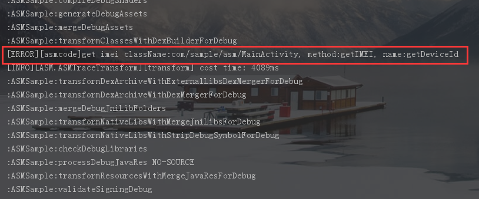
总体来说ASM的上手难度还是高于AspectJ，需要我们了解编译后的字节码，这里所使用的功能也只是冰山一角。课代表鹏飞同学推荐的ASM Bytecode Outline插件是个好帮手！最后我将我练习的代码也上传到了GitHub，里面还包括一份中文版的ASM文档，有兴趣的同学可以下载看看。
参考
© 2019 - 2023 Liangliang Lee. Powered by gin and hexo-theme-book.